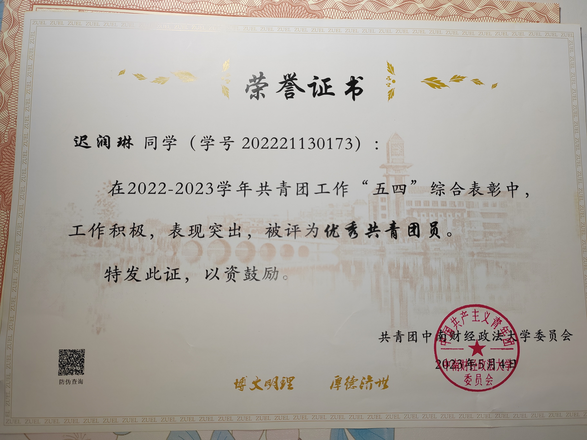
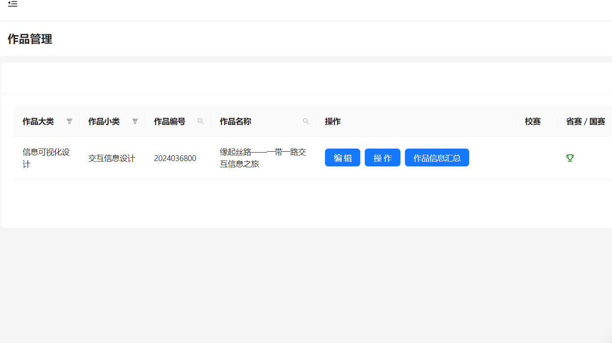

.png)


每一次的付出，都将获得回报！！！

校级优秀共青团员
2022年5月，这是我入学来的第一次五四评优，班级竞争激烈，我以班级团支书的身份博得了同学们的认可，最终获得校级优秀共青团员的荣誉称号
大学生创新创业大赛国家级立项
项目简介：“衣享云端”是一款结合了现代科技和时尚生活的创新型家居产品。它通过运用人工智能、大数据等技术，为用户提供智能化、个性化的衣物管理和搭配意见，让衣橱变得更加智能、便捷和实用。本产品可根据自身需求，选择二手交易、公益捐衣或裁洗推荐。在二手交易、公益捐衣功能中，用户可借鉴系统智能整理的闲置衣物排行，按需选择出要转卖、捐赠的衣物，提高衣物资源的利用率，优化衣橱存储空间；在裁洗推荐功能中，系统会结合用户的实时定位和衣物洗护需求，为用户提供最优的店铺选择，方便用户及时对衣物进行裁洗。更具创新点的是本产品的掌上试衣间和智能搭配功能。用户输入个人基本身形特征、脸部特征后，即可获得量身打造的3D虚拟人。利用虚拟人，用户可进行穿搭预览；此外，用户可通过选择出行场合、时间以及天数，并输入风格偏好，获得多种多样的推荐穿搭方案。

计算机设计大赛省级二等奖
项目简介：随着“一带一路”倡议的深入推进，如何全面、直观地展示其历史渊源、成员国合作成果及经济数据等信息成为重要课题。为此，我们设计并实现了本项目，旨在通过信息可视化与交互设计，为公众提供一个深入了解“一带一路”的窗口。我们的作品是一款基于知识图谱、融合信息可视化与交互设计的科普性平台网站，通过丰富的交互功能，带领观众深入了解“一带一路”倡议的深远影响。作品以丝路为时间轴，梳理重要节点与事件，展现历史脉络，讲述历史故事；通过地图直观展示成员国分布，动态文字气泡展示一带一路国家演变；同时，作品还运用数据可视化技术，借助动态图表直观呈现沿线国家的经济数据演变，还增加了交互设计，提升用户体验感；此外，作品以知识图谱形式展示工程项目，让复杂信息一目了然，用户可以通过标签筛选、搜索栏搜索实现针对性的信息展示；更有智能问答与趣味答题功能，增添互动乐趣，提升用户体验。通过这部作品，我们期望能够激发公众对“一带一路”的兴趣与关注，共同见证这一伟大倡议的辉煌成就。大学生创新创业大赛省级级立项
项目简介：本团队依托于罗斯的福利多元主义理论与Grossman的健康需求理论，通过stata和spss对CLHLS2008-2023年5期的数据以及前期调研数据进行抽取、清理、加载工作。本团队将以长期照料方式为解释变量以死亡风险为被解释变量，同时选取个体特征、社会经济特征、家庭或社会支持特征、健康状况作为控制变量。在考察各因素对老年人死亡风险的影响后，进行Kaplan- Meier估计与Log-rank检验，进一步建立cox模型。本团队将分3步研究社会照料对失能老人死亡风险的研究、家庭照料对失能老人死亡风险的研究、不同长期照料方式对失能老人死亡风险的研究。同时，以随机森林模型进行纵向排序，对cox模型进行补充，从纵向和横向双角度进行研究，提高研究严谨度。最后，在研究得出结论后，本团队将通过机制性分析，进一步阐释社会照料方式对老人的死亡风险影响更大，以及弱化这种影响以降低老年人的死亡风险，并且基于以上分析，有针对性地提出建议，辅助照料模式选择和政策的推行。
校级优秀学生干部
大二我在院级成功留部，成为院级秘书处的主要负责人，再认真工作一年后，获得了同学们的认可，在2024年的五四评优中获得了校级优秀共青团员的荣誉。希贤杯舞蹈大赛校级三等奖
经过两个的训练，我们院在学校希贤杯系列竞赛之“足尖上的青春”校园舞蹈大赛中获得三等奖的荣誉